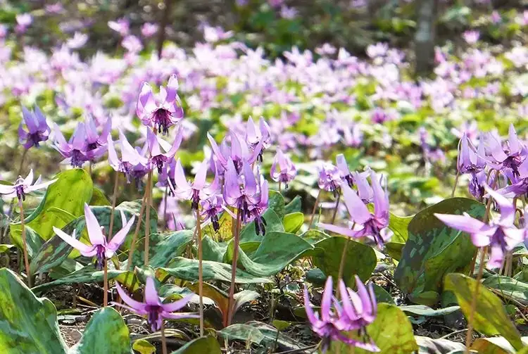

Mizuho, Tokyo: things to do, food and stays
Mizuho · Tokyo
Mizuho
Highlighted on the Tokyo map.

Sights
Dining
Matsuya
松屋

Noodle restaurant in Mizuho, Tokyo.
WEST LAND FARM
ウエストランドファーム

Sweets and bakery shop in Mizuho, Tokyo.
Chuka Soba Senmon Ten Binbin Tei Mizuho ten
中華そば専門店 びんびん亭 瑞穂店

Noodle restaurant in Mizuho, Tokyo.
Ramen Shop
ラーメンショップ

Noodle restaurant in Mizuho, Tokyo.
Teuchi Soba Murayama
手打そば むらやま

Noodle restaurant in Mizuho, Tokyo.
Chinese Bonten Mizuho ten
中華料理ぼん天 瑞穂店

Noodle restaurant in Mizuho, Tokyo.
Shonan no Ie
湘南乃家

Noodle restaurant in Mizuho, Tokyo.
Oshokuji Dokoro Nihon Tei
お食事処 日本亭

Noodle restaurant in Mizuho, Tokyo.
sogochintanran Reservation
蘇哥清湯腩

Noodle restaurant in Mizuho, Tokyo.
Kuradashi Miso Menba Ippo Musashimurayama ten
蔵出し味噌 麺場壱歩 武蔵村山店

Noodle restaurant in Mizuho, Tokyo.
Takahashi Ya
たかはしや

Japanese restaurant in Mizuho, Tokyo.
Nanjing Tei Mizuho ten
南京亭 瑞穂店

Noodle restaurant in Mizuho, Tokyo.
Senbonmatsu Bokujou Joyful honda mizuho ten
千本松牧場 ジョイフル本田瑞穂店

Restaurant in Mizuho, Tokyo.
Rakuchin
楽珍

Chinese or Asian restaurant in Mizuho, Tokyo.
Tenshin Ramen Mizuho ten
天芯ラーメン 瑞穂店

Noodle restaurant in Mizuho, Tokyo.
Koshinkan Kissa Storia
耕心館 喫茶ストーリア

Cafe in Mizuho, Tokyo.
Tamura Seimenjo
田村製麺所

Noodle restaurant in Mizuho, Tokyo.
Yokohama Iekei Ramen Mizuho Yamato Ya
横浜家系ラーメン 瑞穂大和家

Noodle restaurant in Mizuho, Tokyo.
Hinoya Mizuho machi ten
日乃屋 瑞穂町店

Japanese restaurant in Mizuho, Tokyo.
Chunchun Tei
雀雀亭

Noodle restaurant in Mizuho, Tokyo.
Kamenoko Do
亀ノコ堂

Sweets and bakery shop in Mizuho, Tokyo.
Ippin Kyo
逸品居

Chinese or Asian restaurant in Mizuho, Tokyo.
Menya Shimura
麺や しむら

Noodle restaurant in Mizuho, Tokyo.
Shikisai Chuka Saika Bo
四季菜中華 彩華房

Noodle restaurant in Mizuho, Tokyo.
Gomtang
コムタン

Meat restaurant in Mizuho, Tokyo.
Manhokutei Mizuho ten
満北亭 瑞穂店

Noodle restaurant in Mizuho, Tokyo.
STEAK MAN Mizuho ten
STEAK MAN 瑞穂店

Meat restaurant in Mizuho, Tokyo.
Bikkuri Donkey Mizuho ten
びっくりドンキー 瑞穂店

Meat restaurant in Mizuho, Tokyo.
Omura
大むら

Noodle restaurant in Mizuho, Tokyo.
Tougetsu Hou
登月峰

Noodle restaurant in Mizuho, Tokyo.
Sosaku Kyodo Gashi Enomoto Ya
創作郷土菓子 榎本屋

Sweets and bakery shop in Mizuho, Tokyo.
Izakaya Ippatsu
居酒屋一発

Izakaya or bar in Mizuho, Tokyo.
Negishi Yogashi Ten
ネギシ洋菓子店

Sweets and bakery shop in Mizuho, Tokyo.
Super Shimoda Mizuho ten
スーパー シモダ 瑞穂店

Restaurant in Mizuho, Tokyo.
Sashida Ya
さしだ家

Noodle restaurant in Mizuho, Tokyo.
Aji Club Half Time
味倶楽部 ハーフタイム

European restaurant in Mizuho, Tokyo.